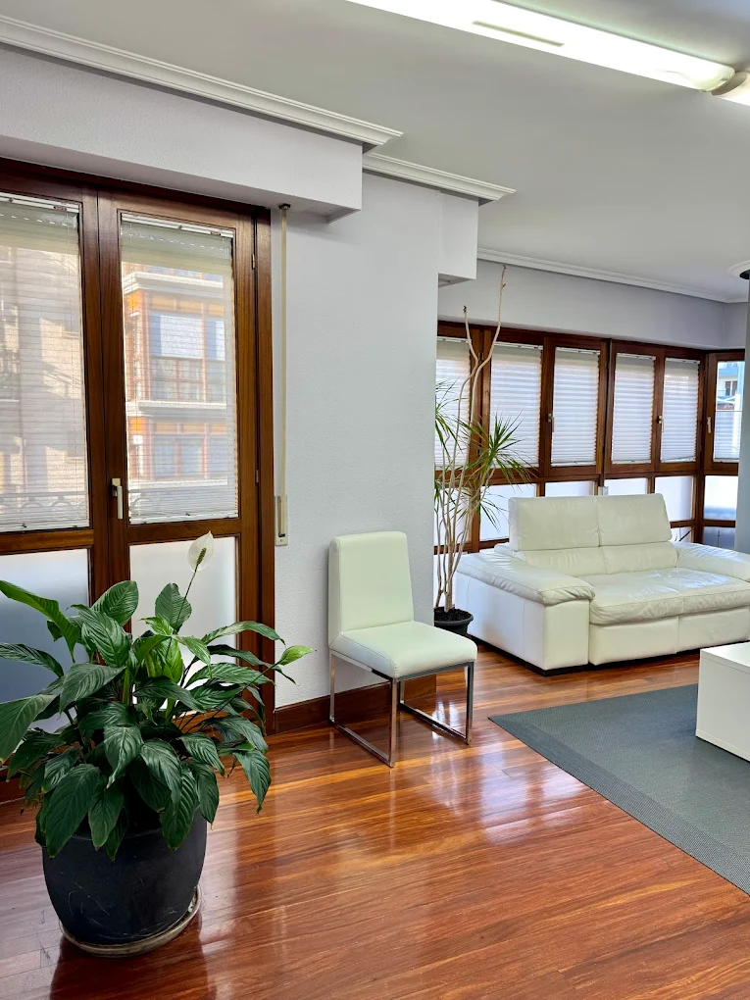
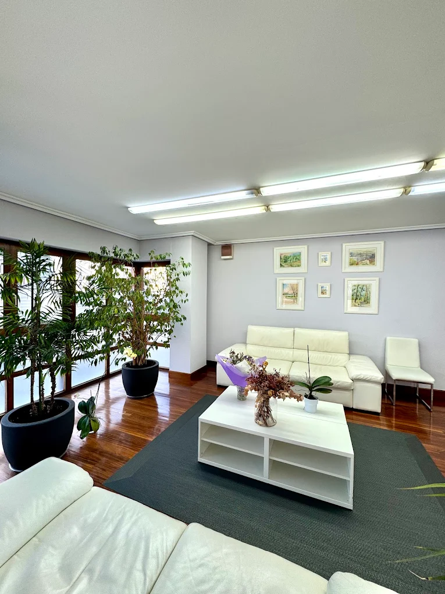
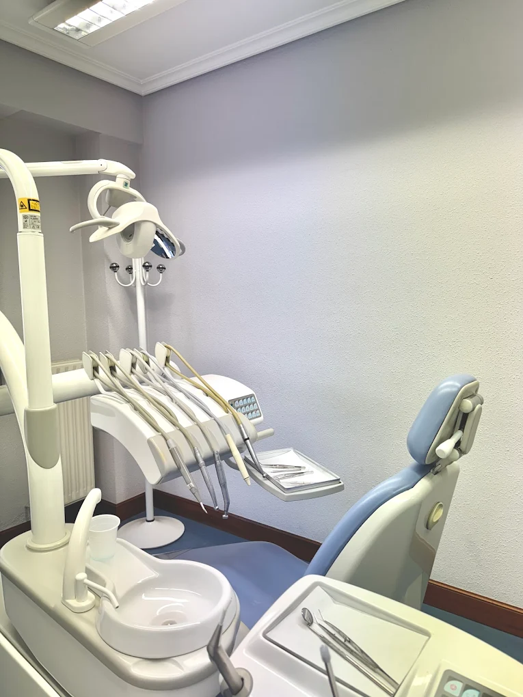

Limpieza y revisión
Higiene dental profesional y revisiones periódicas para prevenir antes de tratar.
Ver másComprobando horario…
Dos generaciones de dentistas cuidando la boca de las familias de Irún y el Bidasoa. Cercanía, calma y una profesionalidad que se nota desde el primer momento.
reseñas reales en Google
valoración media
años cuidando sonrisas
generaciones de dentistas

La clínica
Dirigida por Cristina Sagarzazu y su hija Marta Pérez Sagarzazu, nuestra clínica del centro de Irún lleva décadas acompañando a las mismas familias (y ahora a sus hijos) con la misma cercanía de siempre.
Aquí no eres un número. Te conocemos por tu nombre, recordamos tu historia y nos tomamos el tiempo que haga falta para que cada visita sea tranquila. Por algo nuestros pacientes dicen que llevan «toda la vida» con nosotras.
Tratamientos
Desde una revisión sencilla hasta los tratamientos más completos, siempre con atención personalizada.
Higiene dental profesional y revisiones periódicas para prevenir antes de tratar.
Ver másBrackets y ortodoncia invisible para niños y adultos. Sonrisas alineadas, con paciencia y seguimiento.
Ver másReemplazo de piezas perdidas con implantes fijos y naturales que recuperan tu mordida.
Ver másTratamiento de conductos para salvar el diente y eliminar el dolor de forma definitiva.
Ver másPrótesis fijas y removibles a medida para devolver función y estética a tu sonrisa.
Ver másBlanqueamiento y estética para una sonrisa sana y bonita, sin perder la naturalidad.
Ver más
Sin miedo
«De tener miedo a ir al dentista a tener ganas de que llegue el día.» Lo dicen nuestros pacientes, no nosotras.
Trabajamos con calma y mucha delicadeza, explicándote cada paso para que sepas siempre qué va a pasar. Tratamos con especial paciencia a quien llega con ansiedad, y también a los más pequeños, porque la confianza no se exige: se gana visita a visita.
Lo que dicen los pacientes
«El trato muy profesional, te hacen sentir cómodo desde el primer momento.»
David I. L. · ★★★★★
«Llevamos toda la vida con ella y su equipo. Maravilloso trato y profesionalidad absoluta.»
M. Asunción Eceiza · ★★★★★
«Muy contentos con el tratamiento de ortodoncia a mi hijo de 9 años. Amables y buenas profesionales.»
Javi Alman · ★★★★★
«De tener miedo a ir al dentista a tener ganas de que llegue el día porque sales feliz.»
Izar Quinn · ★★★★★
«Gran profesionalidad y precios razonables. Muy satisfecha del servicio prestado.»
Yolanda de Pablo · ★★★★★
«Han conseguido que no le tenga miedo al dentista. 100% recomendable.»
Maria Marin · ★★★★★
De toda la vida
Lo que empezó Cristina hace más de dos décadas lo continúa hoy su hija Marta, con el mismo cuidado por el detalle.
Abre la clínica en Irún y construye, paciente a paciente, una reputación basada en el trato cercano y la honestidad.
La segunda generación se incorpora al equipo. «Tan buena profesional como su madre», dicen los pacientes de siempre.
Los hijos de quienes empezaron con Cristina ya vienen a la clínica. Tres generaciones de pacientes, un mismo equipo.
La clínica por dentro




Antes de venir
Estamos en la Calle de Hondarribia, 13, 1º B, 20301 Irun (Gipuzkoa), muy cerca del centro. Puedes ver el mapa y cómo llegar en la página de contacto.
Lunes, jueves y viernes de 09:00 a 17:00. Martes y miércoles de 12:00 a 20:00. Sábados y domingos cerrado.
Sí, recomendamos pedir cita para poder dedicarte el tiempo que mereces. Llámanos al 943 61 94 84 o escríbenos por WhatsApp.
Por supuesto. Tenemos mucha experiencia con los más pequeños y con la ortodoncia infantil, siempre con paciencia y un trato cariñoso.
Es más común de lo que crees. Vamos con calma, sin prisas, y te explicamos todo. Muchos pacientes que llegaron con pánico hoy vienen sin ningún problema.
Cómo trabajamos
Así de fácil es empezar a cuidarte con nosotras.
Pides cita por teléfono, WhatsApp o formulario. Te buscamos un hueco que te venga bien.
El día de tu cita te conocemos, escuchamos qué te preocupa y revisamos tu boca sin prisas.
Te contamos con claridad qué necesitas y qué opciones tienes. Sin tecnicismos. Tú decides.
Acordamos un plan a tu medida y te acompañamos en cada paso, con seguimiento de verdad.
Cuéntanos qué necesitas. Te atenderemos con la cercanía de siempre.